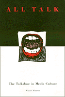

<body bgcolor="#FFFFFF" text="#000000" link="#0000FF" vlink="#CC0000" alink="#CC0000"><center><hr width="350" size="1" align="center" noshade>The postmodern phenomenon of the talkshow and its place in American culture<hr width="350" size="1" align="center" noshade><p><a href="https://cdcshoppingcart.uchicago.edu/Cart/ChicagoBook.aspx?ISBN=9780877229957&&PRESS=temple" target="_top">Buy this book!</a> | <a href="https://cdcshoppingcart.uchicago.edu/Cart/Cart.aspx?PRESS=temple" target="_top">View Cart</a> | <a href="https://cdcshoppingcart.uchicago.edu/Cart/Cart.aspx?PRESS=temple" target="_top">Check Out</a></p><p></p></center><!--none//--><h1>All Talk</h1>
<H2>The Talkshow in Media Culture</H2>
<h3>Wayne Munson</h3>
<P>cloth 0-87722-995-3 $63.50, Feb 93, <FONT COLOR=#990033>Out of Stock Unavailable</FONT>
<br>paper 1-56639-194-6 $35.95, Dec 95, <FONT COLOR=#990033>Available</FONT>
<br>Electronic Book 1-43990-428-6 $35.95 <FONT COLOR=#990033>Out of Stock Unavailable</FONT>
<BR> 288 pp
6x9
</P><h3 align="center"><P><font color="#996633">Outstanding Academic Title, <i>Choice</i>,
1994</font></P>
</H3>
<BLOCKQUOTE><I>"Through sharp scholarship and rigorous reflection, Wayne Munson negotiates the complexities and contradictions of talk-media to produce compelling insights of a far reaching sort. This book combines close stylistic analysis and broad theoretical mediation in exciting, intellectually engaging fashion."</I>
<br>&#151<b>Dana Polan</b>, University of Pittsburgh, author of <I>Power and Paranoia: History, narrative, and the American Cinema</I><I></I></BLOCKQUOTE>
<p>Wayne Munson examines the talkshow as a cultural form whose curious productivity has become vital to America's image economy. As the very name suggests, the talkshow is both interpersonal exchange and mediated spectacle. Its range of topics defies classification: from the sensational and bizarre, to the conventional and the advisory, to politics and world affairs. Munson grapples with the sense and nonsense of the talkshow, particularly its audience participation and its construction of knowledge.
<p>This hybrid genre includes the news/talk "magazine," celebrity chat, sports talk, psychotalk, public affairs forum, talk/service program, and call-in interview show. All share characteristics of lucidity and contradiction&#151the hallmarks of postmodernity&#151and it is this postmodern identity that Munson examines and links to mass and popular culture, the public sphere, and contemporary political economy.
<p>Munson takes a close look at the talkshow�s history, programs, production methods, and the "talk" <I>about</I> it that pervades media culture&#151the press, broadcasting, and Hollywood. He analyzes individual shows such as "Geraldo," "The Morton Downey Show," "The McLaughlin Group," and radio call-in "squawk" programs, as well as movies such as <I>Talk Radio</I> and <I>The King of Comedy</I> that investigate the talkshow�s peculiar status. Munson also examines such events as the political organizing of talkhosts and their role in the antitax and anti-incumbency groundswells of the 1990s. In so doing, Munson demonstrates how "infotainment" is rooted in a deliberate uncertainty. The ultimate parasitic media form, the talkshow promiscuously indulges in&#151and even celebrated&#151its dependencies and contradictions. It "works" by "playing" with boundaries and identities to personalize the political and politicize the personal. Arguing that the talkshow's form and host are productively ill-defined, Munson asks whether the genre is a degradation of public life or part of a new, revitalized public sphere in which audiences are finally and fully "heard" through interactive.
<BR>&nbsp;<h2>Contents</h2><P>
<p>Acknowledgments
<br>Introduction: The Sense of the Talkshow
<br>1. Turning to Talk: The Talkshow's Development
<br>2. Constellations of Voices: How Talkshows Work
<br>3. Making Sense and Nonsense: Talk about the Talkshow
<br>Postscript: A New Sense of Place
<br>Notes
<br>Index
</P><BR>&nbsp;<H2>About the Author(s)</H2>
<P><b>Wayne Munson</b> is Assistant Professor of Communications/Media at Fitchburg State College in Massachusetts.</P>
<BR><H2>Subject Categories</H2>
<p><A HREF="/tempress/american.html" TARGET="_top">American Studies</a>
<BR><A HREF="/tempress/mass_media.html" TARGET="_top">Mass Media and Communications</a>
</p>
<BR><h2 class="inpageheading">In the series</H2>
<P><I><a href="http://www.temple.edu/tempress/culture.html" onMouseOver="window.status='Click for other books in this series!'; return true;" onMouseOut="window.status=''; return true;" target="_top">Culture and the Moving Image</a></i>, edited by Robert Sklar.
</p><p>The <I>Culture and the Moving Image</I> series, edited by Robert Sklar, seeks to publish innovative scholarship and criticism on cinema, television, and the culture of the moving image. The series will emphasize works that view these media in their broad cultural and social frameworks. Its themes will include a global perspective on the world-wide production of images; the links between film, television, and video art; a concern with issues of race, class, and gender; and an engagement with the growing convergence of history and theory in moving image studies.</p>
<p align="center"><a href="https://cdcshoppingcart.uchicago.edu/Cart/ChicagoBook.aspx?ISBN=9780877229957&&PRESS=temple" target="_top">Buy this book!</a> | <a href="https://cdcshoppingcart.uchicago.edu/Cart/Cart.aspx?PRESS=temple" target="_top">View Cart</a> | <a href="https://cdcshoppingcart.uchicago.edu/Cart/Cart.aspx?PRESS=temple" target="_top">Check Out</a></p><p><font face="Arial" size="1"><a href="copyright.html" onMouseOver="window.status='Web Copyright Policy';return true;" onMouseOut="window.status=''" title="Web Copyright Policy">&copy;</a> 2015 <a href="http://www.temple.edu" target="new" onMouseOver="window.status='Link to Temple University home page';return true;" onMouseOut="window.status=''" title="Link to Temple University home page">Temple University</a>. All Rights Reserved. http://www.temple.edu/tempress/titles/907_reg.html</font></p>